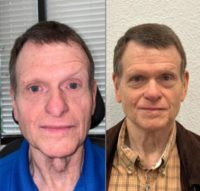
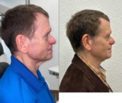
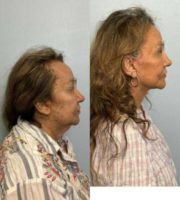

Dr Abrol in Austin, Texas 78705
Name: Anish Abrol, MD
Last name: Abrol
Gender: male
Began aesthetic medicine in: 2021
Years experience: 2
Primary Specialty: Otolaryngologist
Business: TOC Eye and Face
Address: 3705 Medical Pkwy.
Address suite: Ste. 120
Phone: +1 512-458-2141
City: Austin
State: Texas
Zip Code: 78705
Country: US
Statement: Dr. Anish Abrol is a highly esteemed otolaryngologist known for his expertise in the diagnosis and treatment of ear, nose, and throat conditions. His unwavering commitment to improving patients’ quality of life through innovative medical solutions has established him as a compassionate healthcare provider and a leading figure in the field of Otolaryngology.
His educational journey began with a degree in Neuroscience from the University of Michigan. Subsequently, Dr. Abrol completed his medical training at Wayne State University School of Medicine. Following this, he pursued a residency in otolaryngology – head & neck surgery at Case Western Reserve University. Driven by a particular passion for facial plastic surgery, he furthered his training with a one-year fellowship in facial plastic & reconstructive surgery at the University of Washington.
Dr. Abrol’s professional interests encompass a wide range of areas, including the management of the aging face, facial aesthetics, cosmetic and functional rhinoplasty, skin cancer diagnosis and treatment, skin cancer reconstruction, otoplasty, microtia, facial reanimation, and craniofacial trauma.
Consulting Fees: 100$
Has Sponsored Offer : No
Clinical Privileges:
- Ascension Seton Medical Center
- Dell Seton Medical Center
- Dell Children’s Medical Center
- St. David’s Medical Center
- St. David’s North Austin Medical Center
- St. David’s Georgetown Hospital
- St. David’s Round Rock Hospital
Education:
- Undergraduate: BS, Neuroscience, University of Michigan
- Medical: MD, Wayne State University School of Medicine
Postdoc Training:
- Residency: Otolaryngology – Head & Neck Surgery, Case Western Reserve University
- Fellowship: Facial Plastic & Reconstructive Surgery, University of Washington
GPS coordinates on map: 30.3049563,-97.7440893
Primary location:
Location name: Austin
State: TX
Country: US
Map point: 30.2687,-97.74520111
Treatments:
- African American Rhinoplasty
- Asian Rhinoplasty
- Botox
- Brow Lift
- Buccal Fat Removal
- Cheek Fillers
- Chin Filler
- Chin Implant
- CO2 Laser
- Deep Plane Facelift
- Ear Surgery
- Earlobe Repair
- Eyelid Surgery
- Facelift
- Facelift Revision
- Facial Fat Transfer
- Facial Reconstructive Surgery
- Laser Resurfacing
- Lip Fillers
- Lip Lift
- Lip Surgery
- Lower Facelift
- Neck Lift
- Revision Rhinoplasty
- Rhinoplasty
- Septoplasty
RealSelf Info
Rating: 5.0
Profile views: 404
Answer count: 10
Review count: 5
5 star count: 5
Total star count: 5
Star rating: 3.2964376360265
Lead count last three months: 2
Profile created: Sep 5, 2022
Profile modified: Oct 5, 2023
Profile photo modified: Sep 26, 2023
Profile promotion: Yes
Profile inactive: No
Premier status: Free
Tier: Free-Unclaimed
RealCare Promise: No
Directory link: Board Certified Otolaryngologist
RealSelf’s PRO: No
Doctor Designation Start Time: Nov 22, 2022
Doctor Designation End Time: Jan 1, 2033
Locations
- Austin, TX, US. GPS coordinates: 30.2687,-97.74520111
Latest ratings of treatments
- Septoplasty (Jun 2023) – Overall rating: 5/5
- Septoplasty (Jun 2023) – Overall rating: 5/5
- Facial Reconstructive Surgery (Dec 2022) – Overall rating: 5/5 (Wait times: 5/5, Doctor’s bedside manner: 5/5, Phone or email responsiveness: 5/5, Payment process: 5/5, Time spent with patient: 5/5, After care follow-up: 5/5, Staff professionalism & courtesy: 5/5, Answered questions: 5/5)
- Botox (Dec 2022) – Overall rating: 5/5
- Botox (Dec 2022) – Overall rating: 5/5
- Botox (Dec 2022) – Overall rating: 5/5
- Rhinoplasty (Sep 2022) – Overall rating: 5/5
- Botox (Dec 2022) – Overall rating: 5/5
- Rhinoplasty (Sep 2022) – Overall rating: 5/5
- Rhinoplasty (Sep 2022) – Overall rating: 5/5
- Botox (Dec 2022) – Overall rating: 5/5
- Botox (Dec 2022) – Overall rating: 5/5
- Botox (Dec 2022) – Overall rating: 5/5
- Botox (Nov 2022) – Overall rating: 5/5
- Botox (Nov 2022) – Overall rating: 5/5
- Botox (Jun 2022) – Overall rating: 5/5 (Wait times: 5/5, Doctor’s bedside manner: 5/5, Phone or email responsiveness: 5/5, Payment process: 5/5, Time spent with patient: 5/5, After care follow-up: 5/5, Staff professionalism & courtesy: 5/5, Answered questions: 5/5)
- Rhinoplasty (Sep 2022) – Overall rating: 5/5
- Botox (Dec 2022) – Overall rating: 5/5
- Botox (Jun 2022) – Overall rating: 5/5 (Wait times: 5/5, Doctor’s bedside manner: 5/5, Phone or email responsiveness: 5/5, Payment process: 5/5, Time spent with patient: 5/5, After care follow-up: 5/5, Staff professionalism & courtesy: 5/5, Answered questions: 5/5)
- Botox (Jun 2022) – Overall rating: 5/5 (Wait times: 5/5, Doctor’s bedside manner: 5/5, Phone or email responsiveness: 5/5, Payment process: 5/5, Time spent with patient: 5/5, After care follow-up: 5/5, Staff professionalism & courtesy: 5/5, Answered questions: 5/5)
- Botox (Jun 2022) – Overall rating: 5/5 (Wait times: 5/5, Doctor’s bedside manner: 5/5, Phone or email responsiveness: 5/5, Payment process: 5/5, Time spent with patient: 5/5, After care follow-up: 5/5, Staff professionalism & courtesy: 5/5, Answered questions: 5/5)
- Botox (Nov 2022) – Overall rating: 5/5
- Botox (Nov 2022) – Overall rating: 5/5
- Botox (Nov 2022) – Overall rating: 5/5
- Botox (Nov 2022) – Overall rating: 5/5
- Botox (Nov 2022) – Overall rating: 5/5
- Botox (Nov 2022) – Overall rating: 5/5
- Botox (Jun 2022) – Overall rating: 5/5 (Wait times: 5/5, Doctor’s bedside manner: 5/5, Phone or email responsiveness: 5/5, Payment process: 5/5, Time spent with patient: 5/5, After care follow-up: 5/5, Staff professionalism & courtesy: 5/5, Answered questions: 5/5)
- Botox (Jun 2022) – Overall rating: 5/5
- Botox (Jun 2022) – Overall rating: 5/5
Doctor’s answers
Question
Answer Header & Date
Answer Snippet
Would an ENT be able to perform a complicated septoplasty due to previous accidents / procedures?
Finding the right doctor
Feb 26, 2023
As you have had previous surgery due to trauma, I would recommend that you see a surgeon who is experienced in facial plastic surgery and nasal airway surgery. These can be either ENT or plastic surgeons who have done additional training in facial plastic and reconstructive surgery. Your specific situation may be difficult due to previous surgery/trauma and the possible need to support your septum with grafts.
Work from home after facelift – would I be okay to start 5 days after surgery?
Time off of work after facelift
Feb 26, 2023
I typically recommend that my patients take it easy for the first few days after a facelift, especially if they are requiring pain medications. You will likely have some swelling and bruising, but you should be able to work from home at about 5 days after surgery. If you feel like you are overdoing it, then I would recommend working for shorter intervals between breaks.
Lower blepharoplasty or tear trough filler – which one can help me with wrinkles?
You have multiple options
Feb 26, 2023
There are multiple options to address the wrinkles around your eyes. Tear trough filler is best for a volume deficiency. By adding volume, this can cause some of the wrinkles underneath your eyes to resolve. However this is not a lasting result as filler will dissolve.
You can consider a lower blepharoplasty to redrape the fat pads underneath the eyes. At the same time, skin can be excised to reduce the appearance of your wrinkles. Alternatively, a TCA peel or CO2 laser can be performed at…
Can rasping be done on the nasal tip to smooth the supratip?
Nasal rasping
Dec 7, 2022
Typically rasping is performed on the bony parts of the nose to help smooth the contour. For the nasal dorsum, it can have an effect of the dorsal cartilage, but considerable force can fracture the cartilage. The nasal tip can be a delicate area and any rasping here can cause contour irregularities. To manage irregularities of the nasal tip or supratip, usually fascia or cartilage grafts can be placed to correct the deformity.
Getting hit after rhinoseptoplasty with grafts?
Trauma after rhinoplasty
Dec 7, 2022
A functional rhinoplasty will usually result in grafts being placed to help support and strengthen the nose. However, with any trauma there is always a risk of the grafts weakening or fracturing. The grafts are usually secured to surrounding structures with sutures, but any trauma can potentially cause them to migrate. If this does happen, revision surgery can be performed to reposition or replace the grafts if needed. Depending on the how much septal cartilage is available for a revision…
Nasal Valve Collapse surgery Round 2 – What options do I have to ope my nose and reduce congestion?
Nasal valve collapse
Dec 7, 2022
Nasal obstruction can be caused by many factors, including septal deviation, nasal valve collapse, and turbinate hypertrophy. Depending on the degree of your collapse, Latera implants may not provide enough support. Other options include a functional rhinoplasty in which cartilage grafts are used to widen the nasal valves and to support the nasal ala. Different types of grafts can be placed depending on the location of the nasal valve collapse, such as alar batten grafts, lateral crural…
How long should I wait before moving forward with a revision rhinoplasty / cartilage graft removal?
Timing of revision rhinoplasty
Dec 7, 2022
Great question. I typically tell my patients that if any revision surgery is needed, it is ideal to wait until 1 year after their initial surgery. I like to wait this long to allow for the swelling to completely settle down and allow the healing process to mature. Reasons to have a revision earlier are if there are severe breathing issues, such as the grafts causing significant obstruction. Other potential options include graft exposure or infections requiring graft removal. Depending on the…
Latest Before And After Photos
-

-
Dr Abrol, Austin, Texas (78705) 69 Year Old Male Who Underwent SeptoReshaping Of Nose Photo
-

-
Dr Anish Abrol, MD, Austin, Texas 69 Year Old Male Who Underwent SeptoNose Operation Image
-

-
Doctor Anish Abrol, MD, Austin, Texas (78705) 75 Year Old Ms. Treated With Deep Plane Lower Facial Cosmetic Surgery, Neck Lift, And Facial Fat Transfer
Last updated on 12/07/2023